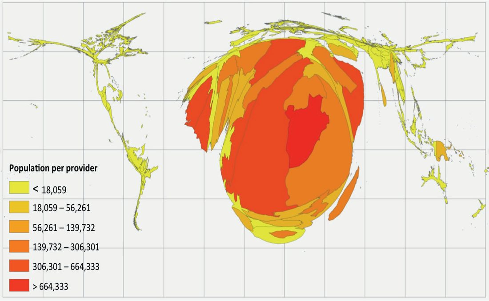

Global Health and Surgery
Summary
- The Lancet Commission on Global Surgery estimated in 2015 that 5 billion of the world's 7 billion people do not have access to surgery [1].
- That is the fact the discipline exists to address. One-third of the total global disease burden is now surgical, the majority being injury and cancer, and in 2015 the World Health Organization declared surgery to be part of public health at the World Health Assembly [1].
- This page covers what global surgery means, surgery as a cost-effective intervention, the four dimensions of access, the workforce targets, and task-shifting.
Definition
Global health is the health of populations in the global context; global surgery is surgery with an understanding of public health [1]. Surgeons understand the needs of their individual patients; public health adds an understanding of the surgical operations needed by the population, and global surgery aims to provide equitable and improved surgical care across the world [1].
Task-shifting is the practice, where there is a workforce shortage with a high surgical burden of disease, of moving appropriate tasks to less specialised health workers [1].
Pathophysiology
The common misconception is about who a global surgeon is. Global surgeons are not system-specific surgeons but are specialised in providing the surgical needs of their communities: a practising surgeon is a retailer for the individual patient, whereas a global surgeon is the wholesaler of the surgical needs of the population [1].
This means all surgeons working in non-tertiary hospitals who perform life-saving and essential surgery, guided by the prevalent burden of surgical disease, are global surgeons [1].
It is a misconception that a global surgeon is primarily a high-income country surgeon helping low- and middle-income country surgeons periodically or through surgical missions [1]. High-income-country and subspecialist surgeons can mitigate only a very small part of the vast unmet need in LMICs; global surgery focuses on improving surgical health systems in parts of the world with a high surgical burden, through the local surgeons in those communities [1].
Clinical features
The consequence of poor access is presentation at a later stage. Patients with acute surgical needs in LMICs do not reach hospital, or reach it too late, in advanced stages of cancer, with already-infected open fractures, with a perforated bowel, or with burn contractures [1].
Unmet need is greatest in eastern, western and central sub-Saharan Africa and South Asia, regions where young mothers die of physiological conditions such as pregnancy for want of a caesarean section [1].
Etiology
Surgery was previously excluded from public health priorities on cost grounds. Surgical and anaesthesia care were perceived as too expensive and too complex to be a priority in resource-poor settings; the fact that early surgery saves lives and boosts the economy encouraged health planners to place surgery in the essential group of services in national health strategy [1].
That reappraisal followed an epidemiological transition: with the decline in communicable disease, one-third of total disease burden is now surgical [1]. Since the 2015 World Health Assembly declaration, scaling up surgical and anaesthesia care has become a worldwide movement under the umbrella term of global surgery [1].
Surgery becomes more cost-effective when it is not delivered as isolated interventions, but as a group of interventions within a platform of clinical care such as a district hospital [1]. The Disease Control Priorities group of the World Bank has identified the surgical procedures that address the substantial needs of populations [1].
Diagnosis
Access is assessed through four lenses: timeliness, capacity, safety and affordability [1]. The probability of access is the joint probability of all four, failure of any one means no access [1].
- Geographical access is the ability of a patient to reach a surgical facility within 2 hours, the crucial time for life-threatening haemorrhage [1].
- Capacity means the facility has the required infrastructure and workforce and is able to perform safe surgery [1].
- Affordability is the final barrier, when a patient cannot afford the surgery offered [1].
Although barriers appear most pronounced in LMICs, there are also disadvantaged and vulnerable populations in high-income countries [1].
Thresholds and severity
The numbers that define the field [1]:
| Metric | Figure |
|---|---|
| People without access to surgery | 5 billion of 7 billion |
| People in LMICs without access | 9 out of 10 |
| Additional operations needed each year | 143 million |
| Procedures performed worldwide each year | 313 million |
| Share occurring in the poorest countries | 6%, where over a third of the world's population lives |
| Target operative volume by 2030 | 5,000 procedures per 100,000 population |
The spread between countries is enormous: Ethiopia performs about 150 operations per 100,000 population, Hungary about 23,000 [1]. But more than 5,000 operations and further expenditure do not bring commensurate health benefits [1], which is why 5,000 is the target rather than a floor to keep climbing from.
Low operative volumes are associated with high case-fatality rates from common, treatable surgical conditions, injuries, early cancer and burns [1].
The workforce target has a defined benchmark and a defined plateau. A surgeon, anaesthetist and obstetrician at the district hospital are considered essential staffing, and in many LMICs the SAO density is under 5 per 100,000 population [1].
As the SAO number rises there is a dramatic improvement in key indicators such as the maternal mortality ratio, but the benefits plateau beyond 20 SAOs per 100,000 population [1].
By 2030 all LMICs are committed to scaling up to at least 20 SAO providers per 100,000 population, and reaching that benchmark in all countries requires 1.27 million providers to be trained by 2030 [1].
Where the workforce is short and the surgical burden high, task-shifting moves appropriate tasks to less specialised health workers [1].
The Lancet Commission on Global Surgery reference is Meara JG, Leather AJM, Hagander L et al., Global surgery 2030: evidence and solutions for achieving health, welfare, and economic development [1].

Treatment and Management
Essential surgery is delivered through surgical healthcare delivery platforms rather than as isolated procedures, the district hospital being the model [1].
Building capacity is a training problem before it is a service problem, which is why the 2030 commitment is expressed as providers trained rather than operations performed [1].
Procedural interventions
Task-shifting is the operational answer to workforce shortage, moving appropriate procedures to less specialised health workers where the burden of disease demands it [1].
The related patient-safety interventions, the WHO surgical safety checklist and the burden of unsafe injections in resource-poor settings, are covered on the Patient Safety and Quality Improvement page.
Complications
The complication of inadequate access is measured in stage at presentation rather than in operative morbidity: advanced cancer, infected open fractures, perforated bowel and burn contracture [1].
The complication of an inadequate workforce is maternal death from conditions such as obstructed labour, for want of a caesarean section [1].
Outcomes
The relationship between operative volume and outcome is real but bounded: low volumes carry high case-fatality from treatable conditions, while volumes above 5,000 per 100,000 bring no commensurate benefit [1].
The same is true of workforce density: dramatic gains up to 20 SAO providers per 100,000, then a plateau [1]. Both figures argue for spreading provision rather than concentrating it.
References
- Bailey & Love's Short Practice of Surgery, 28th ed., Ch. 16 Global health and surgery
- Bailey & Love's Short Practice of Surgery, 28th ed., Ch. 37 The spine